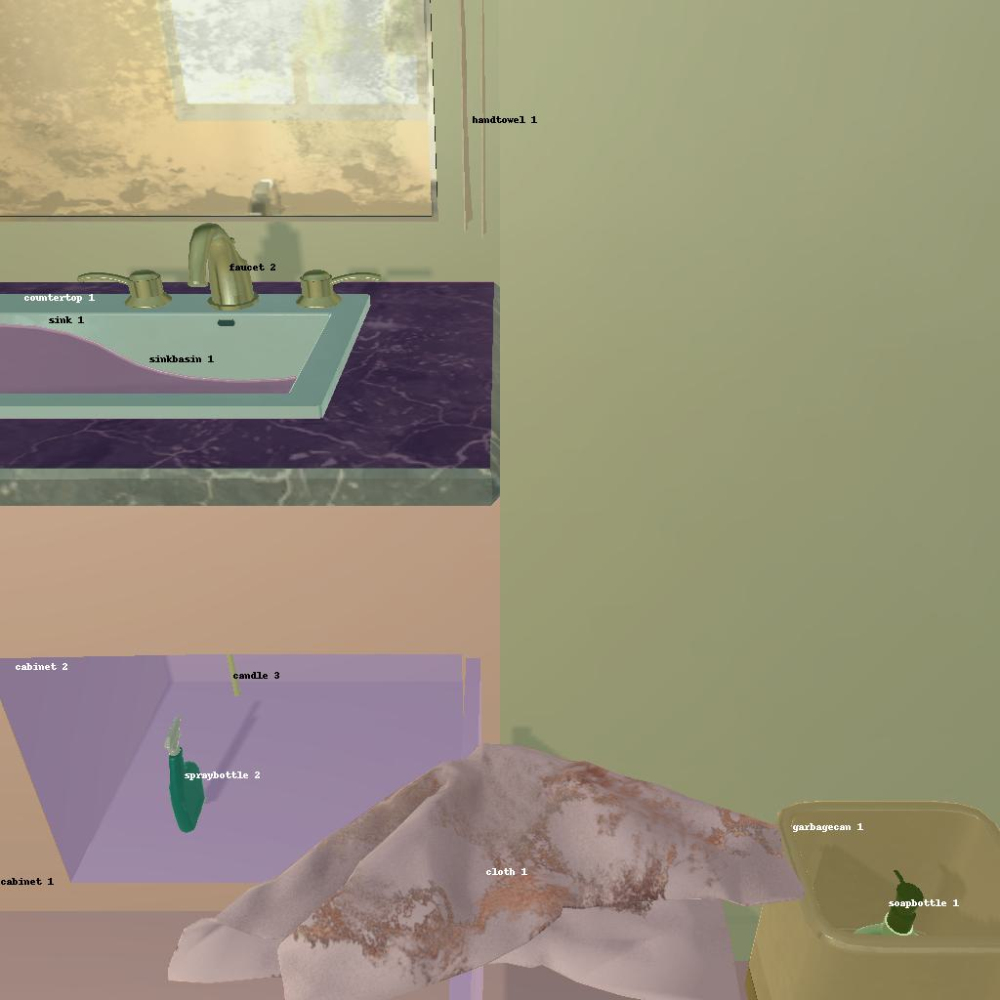
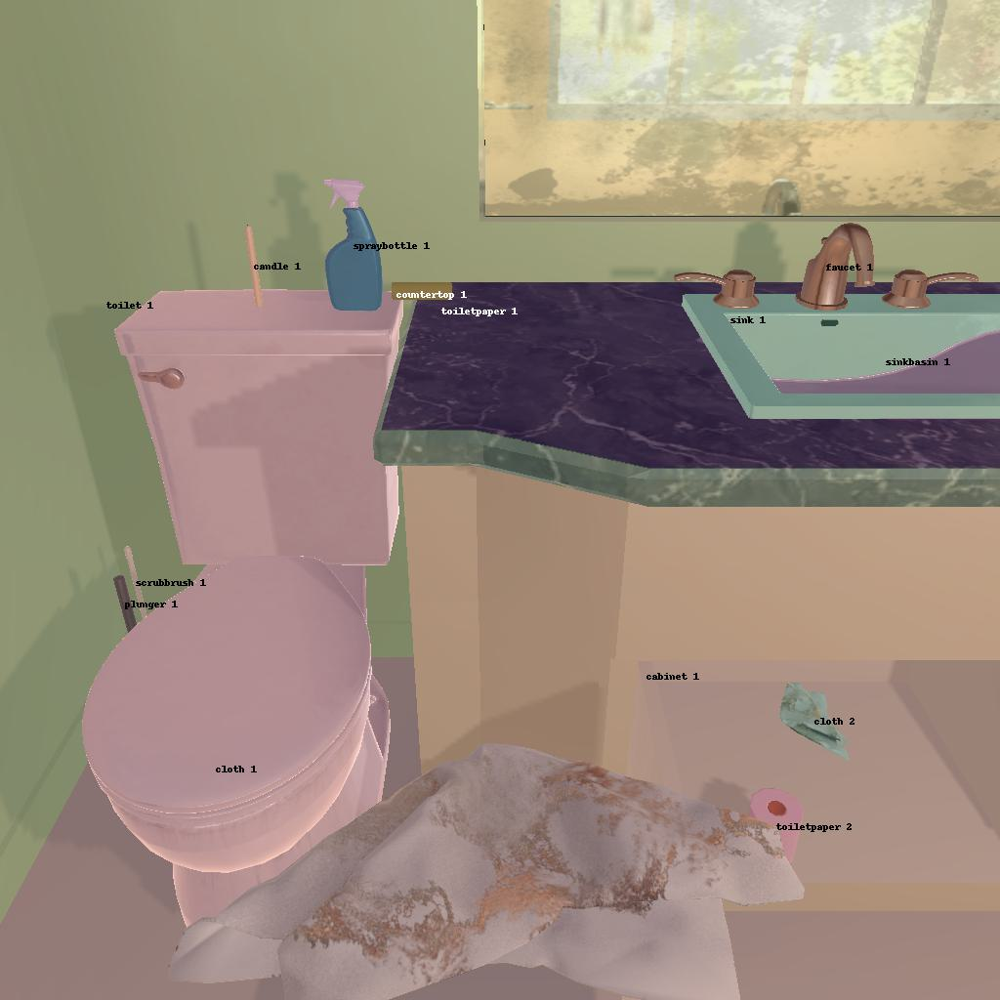

---------------------------------------------------------task: 11---------------------------------------------------------
--------------------------------------------------------------------------------------------------------------------------------------------------------------------
--------------------------------------------------------------------------------------------------------------------------------------------------------------------
Step:--------------------------------------------------------------------------19-------------------------------------------------------------------------------
----------------------------------------
VLM Prompt:
Image1:
Image2:
Image3:
**Instruction**
1. Analyze the provided image to identify all visible household objects, focusing on those relevant to the task description "clean some soapbar and put it in bathtubbasin."
2. Use the analysis of the image and the task hint "The agent must find an object of the desired type, pick it up, go to a sink or a basin, clean the object with a sink or basin, and then find the correct location to place it and put it down there. The agent does not need to use soap bottle or faucet to clean the object, and the agent just needs to do action that is "clean the object with the sink or sink basin"." to answer the question: what is the most reasonable action in the choices for the task description "clean some soapbar and put it in bathtubbasin"?
4. Decide and write the answer using the template: The answer is: (i): , where i is the real number. If there is no desired object in the image, search every place based on **Initial Observation** to find the object. And if no one is exactly correct, choose a similar answer.
**Initial Observation**
You are in the middle of a room. Looking quickly around you, you can see bathtub (1), bathtubbasin (1), toilet (1), cabinet (1-2), countertop (1), sink (1), sinkbasin (1), garbagecan (1)
**Answer Choices**
(1): go to bathtub 1
(2): go to bathtubbasin 1
(3): go to toilet 1
(4): go to countertop 1
(5): go to sink 1
(6): go to sinkbasin 1
(7): go to cabinet 2
(8): go to garbagecan 1
(9): close cabinet 1
(10): put cloth 1 in/on cabinet 1
(11): examine cloth 1
(12): examine cabinet 1
**Answer**
Let's think step by step by following the instructions.
----------------------------------------
----------------------------------------
Original Response:
Firstly, we look for the soapbar, which is not visible in any of the provided images. However, based on the Initial Observation, cabinet 1 and cabinet 2 are places where a soapbar could be stored.
Next, we need to clean the soapbar. The task hint indicates that we do not need to use a soap bottle or faucet to clean the object; we just need to "clean the object with the sink or sink basin." Therefore, we must go to the sink or sinkbasin to perform the cleaning action.
Finally, we need to put the cleaned soapbar in the bathtubbasin.
Based on the steps above, the first action should be to find the soapbar, which is likely in one of the cabinets. Therefore, the most reasonable action from the choices would be to check the cabinets.
The answer is: (7): go to cabinet 2.
----------------------------------------
----------------------------------------
>>> Refine Original VLM Response and Get Pure Action: go to cabinet 2
----------------------------------------
-----------------------------------------------------------------
Running time: 8.697197675704956 seconds
Total Money: 6.95856
-----------------------------------------------------------------
-----------------------------------------------------------------
Text Observation:You arrive at loc 7. The cabinet 2 is open. On the cabinet 2, you see a faucet 2, a spraybottle 2, a handtowel 1, a soapbottle 1, and a candle 3.
-----------------------------------------------------------------
UNSUCCEED